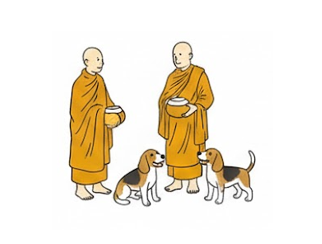
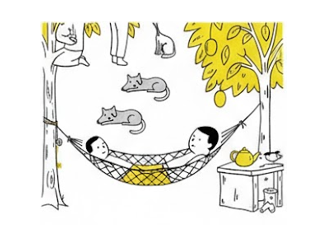
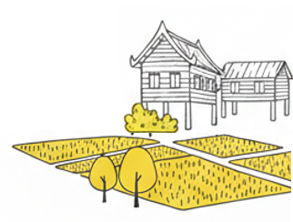

Simple life, real happiness.
In Thai, the phrase "ตามมีตามเกิด" (Tam Mee Tam Gerd)
literally means "to live according to what you have, as it happens."
It is not about giving up. Rather, it is an ancient Thai wisdom of living—an embrace of our current environment and the abundance already surrounding us with a heart of gratitude.
Stop counting what is missing, and instead, feel the sunlight filtering through the trees, the breeze passing by, and the smiles of those beside you.
We invite you to experience a way of life that creates "space for the soul."

Welcome to ตามมีตามเกิด Tour, where every journey flows naturally. We offer authentic local experiences, peaceful nature, and unforgettable moments beyond typical tourism.
Explore More
Welcome to ตามมีตามเกิด Workshop, where you can learn, create, and connect with local culture. Experience traditional crafts, organic farming, and mindful living in a natural setting.
Explore More
Welcome to ตามมีตามเกิด Farm, a place where life flows naturally. Here, you can relax, breathe fresh air, enjoy organic food, and rediscover the simple beauty of nature.
Visit Farm